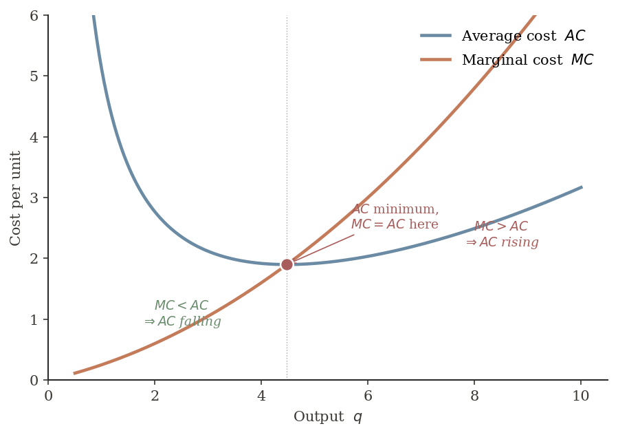
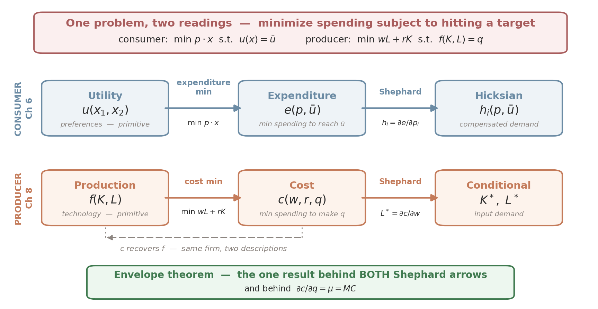
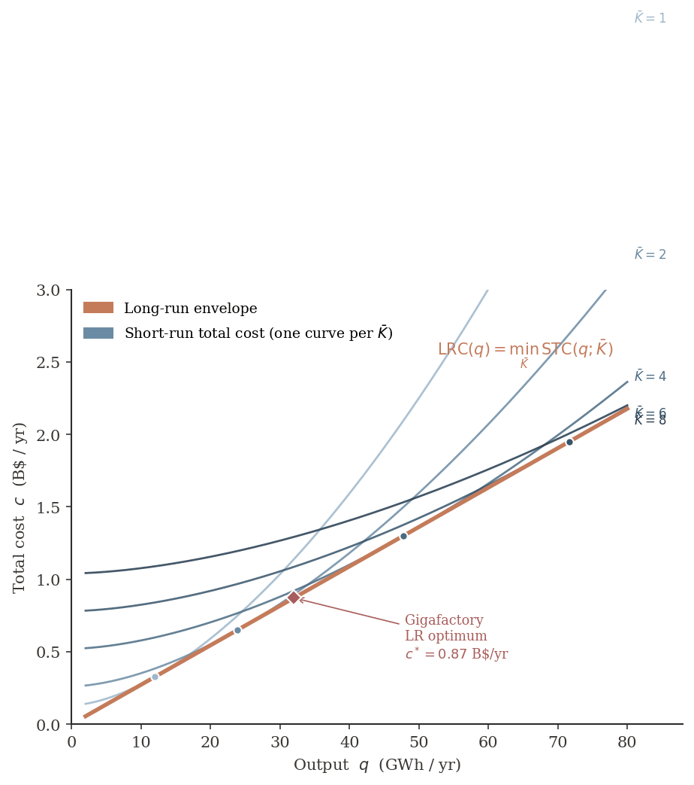

ECON 2316 • Microeconomic Theory • Chapter 8
Costs of Production
A UAW wage shock hits the gigafactory — what does the cost-minimizing input mix look like, and what does it cost?
Dr. Richeng Piao
Department of Economics
Northeastern University — 100 min

Learning Objectives
By the end of class today, you will be able to…
8.1
Set up the firm's cost-minimization Lagrangian and state the tangency condition \(\text{MRTS}_{LK} = w/r\) and the equimarginal principle \(MP_L/w = MP_K/r\). (Bloom L2)
8.2
Solve for the cost-minimizing input bundle \((K^*, L^*)\), total cost \(c^*\), and conditional input demands at the gigafactory calibration. (Bloom L3)
8.3
Predict how \(L^*, K^*,\) and \(c^*\) respond to a wage shock using Cobb-Douglas comparative statics. (Bloom L4)
8.4
Apply the envelope theorem to recover marginal cost \(MC = \mu\) and Shephard's lemma \(\partial c/\partial w = L^*\) from the cost function. (Bloom L4)
8.5
Distinguish short-run and long-run cost curves, and derive the LR cost curve as the lower envelope of SR cost curves. (Bloom L5)
From the Production Function to the Cost Function
Ch 7 — What's feasible?
- Production technology \(Q = f(K, L)\)
- Marginal products \(MP_K, MP_L\)
- MRTS \(= MP_L/MP_K\) (slope of isoquant)
- Gigafactory: \(Q = 8 K^{0.4} L^{0.6}\)
Ch 8 — What's cheapest?
- Cost-min problem: \(\min\, wL + rK\) s.t. \(f \geq q\)
- Cost function \(c(w, r, q)\)
- Conditional input demand \(K^*, L^*\)
- Marginal cost \(MC = \partial c/\partial q\)
The cost-min problem is the producer-side analog of Ch 6's expenditure minimization. Same Lagrangian, same envelope theorem, same Shephard's lemma — just swap utility for production, prices for input prices, and Hicksian for conditional input demand. The duality machinery is identical.
December 2023 — A Wage Shock Hits the Gigafactory
The United Auto Workers won historic contracts at Stellantis, Ford, and GM, lifting top-tier production wages to \$42/hr base by 2027.
Tesla Gigafactory Nevada is non-union — but its labor market isn't. Within weeks, HR pushed base hourly pay up ~10%; fully loaded labor cost rose from \(w \approx \$45\) to \(w \approx \$50\)/hr.
Output target unchanged at \(Q = 32\) GWh. Capital stock fixed in the short run. The thing the plant can adjust is the input mix.
How much should the mix change? In which direction? At what cost?
+25%
UAW top-tier pay rise on signing (Stellantis, Ford, GM — Oct 2023)
+10%
Tesla Nevada hourly pay rise (Jan 2024 spillover)
\$50
Fully-loaded \(w\)/hr at the gigafactory (BLS ECEC Dec 2025)
0.13
Capital rental rate \(r\) (BEA + Damodaran 2026, $/yr)
ISOCOST
where input prices come from · same-cost input combinations · the firm's budget line
Where Input Prices Come From
To pick the cost-minimizing recipe today, the firm needs two market-set prices: the wage (\(w\)) for labor and the rental rate (\(r\)) for capital.
Labor cost = wage

Construction-laborer market in Boston, MA: \(w \approx \$28\text{–}32\)/hour for entry-level; \(\$31.95\)/hour at Pioneer Mgmt.
Capital cost = rental rate

Equipment-rental market: \(r \approx \$106\)/day for a 19′ scissor lift; \(\$1{,}207\)/week for a 9K telehandler.
The point. The firm doesn't choose \(w\) or \(r\) — markets do. The firm chooses how much \(K\) and \(L\) to use given those prices. Today we combine these market-set input prices with the technology-set marginal products to find the cost-minimizing recipe (\(\text{MRTS}_{LK} = w/r\)).
The Firm's Cost-Minimization Problem
An isocost line shows all input combinations that yield the same cost — the producer-side analog of the consumer's budget line.
\[ C \;=\; R\,K \;+\; W\,L \]
\(C\) = total cost · \(R\) = rental rate of capital · \(W\) = wage rate
Input prices
Wage \(W = \$10\) · Rental \(R = \$20\)
Three bundles at \(C = \$50\)
\((L,K) = (5,0),\;(3,1),\;(1,2)\) — same cost, different recipes.
Rearrange to express capital as a function of labor at fixed cost:
\[ K \;=\; \frac{C}{R} \;-\; \frac{W}{R}\,L \]
slope-intercept form: \(K\)-intercept \(=C/R\), slope \(=-W/R\). Higher \(C\) shifts the line outward in parallel.
The Firm's Cost-Minimization Problem

All same slope
slope \(= -W/R = -0.5\)
Parallel & outward
higher \(C\) ⇒ line shifts outward
Pick the lowest
that still hits \(f(K,L)=q\)
Three isocost lines for \(W=\$10\), \(R=\$20\): same slope, different \(C\). The firm wants the lowest isocost that still touches the production isoquant — that point is the cost-minimizing input mix.
§8.2 The Cost-Minimization Problem
isocost lines · tangency · equimarginal principle
Identifying Minimum Cost — Combining Isoquants & Isocost Lines
Remember, the firm's problem is one of constrained minimization.
- Firms minimize costs subject to a given amount of production.
- Cost minimization is achieved by adjusting the ratio of capital to labor.
Graphically, cost minimization requires tangency between the isoquant associated with the chosen level of production, and the lowest-cost isocost line.
Isoquant fixes what the firm must produce; the isocost line fixes at what cost. Tangency picks the cheapest feasible bundle.
Identifying Minimum Cost — A Graphical Approach
A Graphical Approach
- Isocost lines represent how much each set of inputs costs.
- Isoquants represent the production function and show the levels of inputs necessary to achieve a given level of output.
- The firm's objective is to produce \(\bar Q\) at the lowest cost possible.
- The lowest cost is on the isocost line closest to the origin.
- This occurs where the isocost line is tangent to the isoquant — at point \(B\).

\(C_C\) sits below the isoquant — cheap, but doesn't produce enough output. \(C_A\) is feasible at point \(A\) but more expensive than necessary. \(C_B\) is the lowest isocost that still touches the isoquant — the tangency point \(B\) is the cost-minimizing combination.
Application — The Apple-1 at the Byte Shop, 1976
Steve Jobs and Steve Wozniak received Apple's first major order for 50 Apple-1 computers from the Byte Shop in 1976, following a successful prototype demonstration at the Homebrew Computer Club.
The production target
\(q = 50\) Apple-1 boards — fixed by the order. The question: how to deliver 50 boards at the lowest total cost?
The input choice
\(L\) = Wozniak's hand-soldering hours. \(K\) = workbench tools, IC tester, PCB substrate. The recipe was extremely labor-intensive.
The textbook problem. Pick \((K, L)\) on the \(q = 50\) isoquant that minimizes \(W L + R K\). Geometrically, slide the isocost line down until it just touches the isoquant — that tangency point is the cost-min recipe.
Wozniak hand-soldered ~5 boards/week; the Byte Shop wanted 50, cash-on-delivery at $500 each. Cost-min picks the labor-vs-capital recipe that hits the order at the lowest total spend.
Numerical Example — Same Isoquant, Different Input Prices
Target the same isoquant \(\bar Q = 50\) with Cobb-Douglas \(Q = \sqrt{K\cdot L}\) (so \(K L = 2{,}500\)). Closed-form cost-min:
\( L^* = 50\,\sqrt{R/W}, \quad K^* = 50\,\sqrt{W/R}, \quad C^* = 100\,\sqrt{W\cdot R} \)
Case A — baseline
\(W = \$10\), \(R = \$20\)
slope \(-W/R = -0.5\); \(K/L = 0.5\)
- \(L^* = 50\sqrt{2} \approx \mathbf{70.7}\)
- \(K^* = 50/\sqrt{2} \approx \mathbf{35.4}\)
- \(C^* = 10\cdot 70.7 + 20\cdot 35.4 = \mathbf{\$1{,}414}\)
Case B — wage doubles
\(W = \$20\), \(R = \$20\)
slope \(-W/R = -1\); \(K/L = 1\)
- \(L^* = \mathbf{50}\)
- \(K^* = \mathbf{50}\)
- \(C^* = 20\cdot 50 + 20\cdot 50 = \mathbf{\$2{,}000}\)
Case C — cheap labor
\(W = \$5\), \(R = \$20\)
slope \(-W/R = -0.25\); \(K/L = 0.25\)
- \(L^* = \mathbf{100}\)
- \(K^* = \mathbf{25}\)
- \(C^* = 5\cdot 100 + 20\cdot 25 = \mathbf{\$1{,}000}\)
Takeaway. Same output (\(\bar Q = 50\)), different input prices ⇒ different cost-min recipe AND different total cost. As the wage rises (C→A→B), the firm shifts toward more capital, less labor, and total cost climbs from \(\$1{,}000 \to \$1{,}414 \to \$2{,}000\). The substitution can cushion the wage shock — but cannot fully absorb it.
Input Price Changes — Rotating the Isocost Line

Capital is relatively more expensive
\(R\) rises (or \(W\) falls) ⇒ isocost line gets flatter (slope \(-W/R\) shrinks). Tangency slides DOWN-RIGHT to point \(A\) — more labor, less capital.
Labor is relatively more expensive
\(W\) rises (or \(R\) falls) ⇒ isocost line gets steeper (slope \(-W/R\) grows). Tangency slides UP-LEFT to point \(B\) — more capital, less labor.
Same output \(\bar Q\), same isoquant. Only the price ratio changes — and the cost-min recipe rotates around the isoquant.
Take-home. The cost-min input mix is a response to prices. As the wage rises, the firm substitutes away from labor and toward capital — sliding along the same isoquant to a new tangency. Exactly the wage-shock comparative statics the UAW story (§8.1) sets up: \(W \uparrow \Rightarrow K^*/L^* \uparrow\).
Production Technologies — labor-intensive vs. capital-intensive

LABOR-INTENSIVE
Heavy labor inputs
Pizza shop, salons, custom tailoring

MIXED — 1 : 1
Balanced labor & capital
Rideshare, dentistry, contracting
CAPITAL-INTENSIVE
Heavy capital inputs
Robotic warehouses, semiconductor fabs, oil refineries
Same final good can be produced in many ways. The production technology a firm picks — how much labor vs. how much capital — depends on input prices and the available recipe.
Apple in 1976: pure labor-intensive (Jobs & Wozniak in a garage). Apple in 2026: heavily capital-intensive (TSMC fabs assemble the chips). Same firm, very different K/L mix.
Identifying Minimum Cost — The Tangency Math
Mathematically, tangency occurs where the slope of the isocost line equals the slope of the isoquant:
\[ -\frac{W}{R} \;=\; -\frac{MP_L}{MP_K} \;\;\longrightarrow\;\; \frac{MP_K}{R} \;=\; \frac{MP_L}{W} \]
What does this condition imply?
Costs are minimized when the marginal product per dollar spent is equalized across inputs.
Same logic as Ch 5's consumer equimarginal principle (\(MU_1/p_1 = MU_2/p_2\)): the producer-side dual swaps marginal utilities → marginal products and good prices → input prices.
Input Price Changes — When the Firm Should Rebalance
Cost-minimizing condition:
Costs are minimized when \(\;\dfrac{MP_K}{R} = \dfrac{MP_L}{W}\;\) (marginal product per dollar equalized).
If a price changes and the equality breaks, the firm should re-mix inputs:
Case 1
\( \dfrac{MP_K}{R} \;>\; \dfrac{MP_L}{W} \)
The marginal product per dollar spent on capital is higher than on labor.
⇒ More capital and less labor should be used.
Case 2
\( \dfrac{MP_K}{R} \;<\; \dfrac{MP_L}{W} \)
The marginal product per dollar spent on labor is higher than on capital.
⇒ More labor and less capital should be used.
Concrete example coming up in §8.4.3: UAW pushes \(W\) up, so \(MP_L/W\) falls → Case 1 → firm shifts toward capital. (Amazon warehouses doing exactly this in real time.)
Cost-Minimization — The Problem
A firm with technology \(f(K, L)\) faces market input prices \(w\) (wage) and \(r\) (rental rate). It must deliver at least \(q\) units of output. Choose the input bundle that drives total spending to its lowest value:
\[ \min_{K, L \,\geq\, 0} \;\; w L + r K \quad \text{subject to} \quad f(K, L) \geq q. \]
Why \(\geq\), not \(=\)?
Producing extra output requires extra inputs, which costs money. So at the optimum the constraint binds: \(f(K^*, L^*) = q\). We can write \(=\) once we know the optimum sits on the boundary.
Why not min unconstrained?
Unconstrained min of \(wL + rK\) is \(K = L = 0\) — trivial. The output requirement is what makes the problem interesting. \(q\) is handed down from elsewhere (Ch 9 will endogenize it).
The Tangency Condition & Equimarginal Principle
The firm wants the lowest isocost that still touches the isoquant. That's the isocost tangent to the isoquant. Set slope of isoquant = slope of isocost:
\[ \text{MRTS}_{LK} \;=\; \frac{MP_L}{MP_K} \;=\; \frac{w}{r} \]
Equivalently, rearrange to the equimarginal principle:
\[ \frac{MP_L}{w} \;=\; \frac{MP_K}{r} \]
Intuition. If \(MP_L/w > MP_K/r\), a dollar spent on labor produces more output than a dollar spent on capital. The firm should shift toward labor — until the marginal product per dollar is equal across inputs. Stop shifting only when no further re-mix saves money.
The producer-side cousin of Ch 5's consumer equimarginal: \(MU_1/p_1 = MU_2/p_2\). Same logic, swap utility for product.
§8.3 The Lagrangian & Tangency
FOCs · the multiplier \(\mu\) · the cost-min interior solution
Setting Up the Lagrangian
Attach a multiplier \(\mu\) to the binding output constraint \(q - f(K, L) = 0\):
\[ \mathcal{L}(K, L, \mu) \;=\; w L + r K + \mu \bigl(q - f(K, L)\bigr) \]
First-order conditions (at an interior optimum):
\(\partial \mathcal{L}/\partial L = 0\)
\(w = \mu \cdot MP_L\)
\(\partial \mathcal{L}/\partial K = 0\)
\(r = \mu \cdot MP_K\)
\(\partial \mathcal{L}/\partial \mu = 0\)
\(f(K, L) = q\)
Divide the first two: \(\;w/r = MP_L/MP_K = \text{MRTS}_{LK}\) — the tangency. The third pins the solution to the isoquant.
What is \(\mu\)? The shadow value of the output constraint — the marginal cost of an extra unit of output. In §8.5 we'll prove (via the envelope theorem) that \(\mu = \partial c/\partial q = MC\). The Lagrange multiplier is marginal cost.
Tangency at the Gigafactory — \(Q = 32\) GWh

Cost-min bundle:
\((L^*, K^*) = (5.22, \; 2.68)\)
\(c^* = \$0.87\) B/yr
The installed bundle isn't cost-min!
Ch 7's gigafactory anchor \((K, L) = (4, 4)\) sits on the higher dashed isocost: \(c = 0.92\) B/yr — \(\$49\) M / yr above the optimum.
The plant is over-capitalized: installed \(K\) is 49% larger and installed \(L\) is 23% smaller than the cost-min levels at today's input prices.
Why the Firm's Bundle Isn't Always Cost-Minimizing
Capital is sunk
The cell-stacking lines, drying ovens, and assembly robots are bolted to the floor. They depreciate over 7–15 years. You can't — without huge write-downs — rip them out when prices change.
Bundles reflect past prices
The installed (K, L) reflects the prices that prevailed when the bundle was chosen. The 2018 capital-labor ratio was set by 2018 prices — not by 2024 prices.
Cost minimization is a target, not a description. The chapter's machinery tells you what the firm should do at current prices. The firm's actual bundle may differ by a substantial amount — and the wedge between them is real economic waste, gradually closed as old equipment depreciates and new investment can be re-optimized.
Forward-pointer: §8.7 (SR vs LR) will make this concrete — the gigafactory sits on its SR cost curve, which lies above the LR envelope.
§8.4 The Cost Function
Cobb-Douglas closed form · conditional input demands · comparative statics
Cost Function & Conditional Input Demands
Cost function
\[ c(w, r, q) \;=\; \min_{K, L} \,(w L + r K) \;\; \text{s.t.} \;\; f(K, L) = q \]
The minimum total spending required to produce \(q\) units of output at input prices \(w, r\). Function of three arguments: two prices and a quantity.
Conditional input demands
\[ L^*(w, r, q), \quad K^*(w, r, q) \]
The cost-minimizing input bundle conditional on producing exactly \(q\). Solves the FOCs. Distinguishes from unconditional input demand (Ch 9) where \(q\) is also a choice variable.
Three properties to know. The cost function is (i) non-decreasing in each price, (ii) non-decreasing in \(q\), and (iii) concave in each input price — doubling a price less-than-doubles cost because the firm substitutes away. We'll prove (iii) graphically in §8.6 (Shephard).
The Cobb-Douglas Cost Function (Closed Form)
For \(f(K, L) = A K^\alpha L^\beta\), solving the FOCs gives:
\[ c(w, r, q) = (\alpha + \beta)\left(\frac{q}{A}\right)^{\!1/(\alpha+\beta)} \left(\frac{w}{\beta}\right)^{\!\beta/(\alpha+\beta)} \left(\frac{r}{\alpha}\right)^{\!\alpha/(\alpha+\beta)} \]
Three things this formula tells us:
1. Power-of-output
Cost \(\propto q^{1/(\alpha+\beta)}\). Under CRS (\(\alpha+\beta=1\)): linear in \(q\) — double \(q\), double cost. DRS: convex. IRS: concave.
2. Cost shares
\(wL^*/c = \beta/(\alpha+\beta)\), \(rK^*/c = \alpha/(\alpha+\beta)\). The technology fixes the cost shares independent of input prices.
3. Price homogeneity
Doubling \((w, r)\) doubles \(c\) but leaves \(K^*, L^*\) unchanged. Only the ratio \(w/r\) matters for the input mix.
For the gigafactory (\(\alpha = 0.4, \beta = 0.6, A = 8\), CRS): \(c(w, r, q) = (w/0.6)^{0.6}(r/0.4)^{0.4} \cdot q / 8\).
Walkthrough 8.1 — Cost-Min at the Gigafactory
Problem. Gigafactory technology \(Q = 8 K^{0.4} L^{0.6}\), locked prices \(w = 0.10\) B\$/(K-worker·yr), \(r = 0.13\)/yr. Output target \(q = 32\) GWh/yr. Find \((K^*, L^*)\), \(c^*\), and verify the cost shares.
(a) Tangency
\(\dfrac{w}{r} = \dfrac{\beta}{\alpha} \cdot \dfrac{K}{L} \;\Rightarrow\; \dfrac{K^*}{L^*} = \dfrac{\alpha w}{\beta r} = \dfrac{0.4 \cdot 0.10}{0.6 \cdot 0.13} = \mathbf{0.5128}\)
(b) Output constraint. Substitute \(K^* = 0.5128\, L^*\):
\(8 (0.5128 L^*)^{0.4} (L^*)^{0.6} = 32 \;\Rightarrow\; 8 \cdot 0.7656 \cdot L^* = 32\)
\(\;\Rightarrow\; \mathbf{L^* = 5.224}\) thousand workers, \(\mathbf{K^* = 2.679}\) B\$
(c) Total cost & cost shares
\(c^* = wL^* + rK^* = 0.1 \cdot 5.224 + 0.13 \cdot 2.679\)
\(\;= 0.5224 + 0.3483 = \mathbf{0.8707}\) B\$/yr
Labor share: \(wL^*/c^* = 0.5224/0.8707 = \mathbf{0.600 = \beta}\) ✓
Capital share: \(rK^*/c^* = 0.3483/0.8707 = \mathbf{0.400 = \alpha}\) ✓
Compare to installed bundle (Ch 7). At \((K, L) = (4, 4)\), cost \(= 0.92\) B/yr — \$49 M/yr above the optimum. The plant is over-capitalized: installed \(K\) is 49% larger and installed \(L\) is 23% smaller than the cost-min levels. Sunk capital, not bad management.
A 20% Wage Shock — Rotating to a New Optimum

Closed-form elasticities (CRS Cobb-Douglas)
\( L^* \propto w^{-\alpha} \quad K^* \propto w^{\beta} \quad c^* \propto w^{\beta}\)
−7%
\(\Delta L^*\)
(1.2−0.4)
+11.6%
\(\Delta K^*\)
(1.20.6)
+11.6%
\(\Delta c^*\)
(1.20.6)
Wage rose 20%; cost rose only 11.6%. The firm absorbs only the labor-share-weighted portion of the shock.
Walkthrough 8.2 — Tesla Nevada Wage Shock
Problem & Set up. From W8.1's optimum \((K^*, L^*, c^*) = (2.679,\,5.224,\,0.8707)\), the UAW spillover pushes \(w = 0.10 \to w' = 0.12\) (+20%). \(r = 0.13\) and \(q = 32\) unchanged. Find the new \((K', L', c')\) and verify the closed-form elasticities.
Solve — new optimum
- Step 1. Tangency: \(\dfrac{K'}{L'} = \dfrac{\alpha\,w'}{\beta\,r} = \dfrac{0.4 \cdot 0.12}{0.6 \cdot 0.13} = \mathbf{0.6154}\)
- Step 2. Sub into \(Q = 8 K'^{0.4} L'^{0.6} = 32\): \(8 \cdot 0.6154^{0.4} \cdot L' = 32\)
- Step 3. \(L' = \mathbf{4.857}\) (was 5.224); \(K' = 0.6154 \cdot 4.857 = \mathbf{2.989}\) (was 2.679)
Solve — new cost + check
- Step 4. \(c' = 0.12 \cdot 4.857 + 0.13 \cdot 2.989 = \mathbf{0.9714}\) B\$/yr
- Check. \(\Delta L^* = -7.0\%\), \(\Delta K^* = +11.6\%\), \(\Delta c^* = +11.6\%\)
- Match closed-form. \(\partial\!\ln L/\partial\!\ln w = -\alpha = -0.4\) ⇒ \(1.2^{-0.4}-1 = -7.0\%\) ✓; \(\partial\!\ln c/\partial\!\ln w = \beta = 0.6\) ⇒ \(1.2^{0.6}-1 = +11.6\%\) ✓
Takeaway. 20% wage shock ⇒ 7% fewer workers, 11.6% more capital, total cost up only 11.6%. The firm absorbs the labor-share-weighted portion of the shock. A TSMC fab (labor share 17%, not 60%) would see cost rise only \(\sim 3.4\%\) — capital intensity insulates against wage shocks.
Application — Amazon Warehouses 2020–2025
The same algebra as Walkthrough 8.2, playing out at scale across the US warehouse industry. Both \(w\) is rising AND robotic-capital \(r\) is falling — the substitution is much sharper than the gigafactory's.
+47%
Starting wage 2020→2025 (\$15→\$22+/hr at coastal hubs)
1M
Robots deployed by Q3 2025 (vs ~1.5M human warehouse workers)
−35%
Sparrow picker unit cost since 2018 (\(r\) is falling)
\$32B
Q2 2025 capex (2× from two years earlier)
SHV1 Shreveport, LA
Amazon's newest-generation fulfillment center integrates Sequoia (inventory) + Sparrow (robotic-arm picker). Operates with 25% fewer workers than legacy facilities at the same throughput.
The textbook prediction
Cobb-Douglas: \(K^*/L^* \propto w/r\). When \(w/r\) doubles, the cost-min \(K/L\) ratio doubles. Amazon's actual K/L ratio roughly doubled 2020–2025 — exactly the comparative-statics prediction.
Same algebra, sharper substitution. The gigafactory absorbed a 20% wage shock with an 11.6% cost increase because labor is 60% of cost. Amazon faces a much steeper move because robotic capital is now both cheap and close-substitute to warehouse labor — so the substitution effect is large.
§8.5 Marginal & Average Cost
the envelope theorem · \(\mu = MC\) · the AC–MC relationship
Marginal Cost & Average Cost

Definitions
\( MC = \dfrac{\partial c}{\partial q} \qquad AC = \dfrac{c}{q} \)
GPA analogy. AC is your cumulative GPA after \(q\) units; MC is the grade on the next unit. Above your GPA ⇒ GPA rises. Below ⇒ falls. They cross at the GPA minimum.
Algebra: \(\dfrac{d(c/q)}{dq} = \dfrac{MC - AC}{q}\) — so \(AC' \gtrless 0\) iff \(MC \gtrless AC\). The crossover at \(AC' = 0\) means \(MC = AC\) at \(AC\)'s minimum.
CRS Cobb-Douglas special case. \(c\) is linear in \(q\), so \(AC = MC\) everywhere — the U-shape collapses. The U returns under DRS or IRS Cobb-Douglas.
Calculus Corner — The Envelope Theorem: \(\mu = MC\)
Recall the Lagrangian \(\mathcal{L} = wL + rK + \mu(q - f)\). Differentiate the optimized cost with respect to \(q\):
\[ \frac{\partial c}{\partial q} \;=\; \underbrace{w \frac{\partial L^*}{\partial q} + r \frac{\partial K^*}{\partial q}}_{\text{indirect effects}} \;+\; \underbrace{0}_{\text{direct}} \]
Use the FOCs \(w = \mu f_L,\, r = \mu f_K\). The indirect-effects bracket becomes \(\mu(f_L \partial L^*/\partial q + f_K \partial K^*/\partial q) = \mu \cdot \partial f/\partial q = \mu \cdot 1 = \mu\):
\[ \boxed{\;\frac{\partial c}{\partial q} \;=\; \mu \;=\; MC\;} \]
The Lagrange multiplier on the output constraint is marginal cost. No coincidence — \(\mu\) is the shadow price of one extra unit of output, which is by definition marginal cost.
Same envelope mechanics as the consumer's \(\lambda = \partial v/\partial I = \) marginal utility of income (Ch 5).
Poll #1 — AC vs MC at the Gigafactory
At the gigafactory cost-min bundle, total cost \(c^* = 0.87\) B\$/yr at \(q = 32\) GWh. Under CRS Cobb-Douglas (\(\alpha + \beta = 1\)), what's the relationship between marginal cost and average cost at \(q = 32\)?
45 sec to vote
Poll #1 — Answer: C) \(MC = AC\) everywhere
Under CRS, the cost function is linear in \(q\): \(c(q) = (w/\beta)^\beta(r/\alpha)^\alpha \cdot q / A\).
So \(MC = \partial c/\partial q\) is constant, and \(AC = c/q\) is the same constant.
Numerically: \(MC = AC = (0.10/0.6)^{0.6}(0.13/0.4)^{0.4}/8 \approx \mathbf{0.0272}\) B\$/GWh \(\approx\) \$27/MWh on average and at the margin. The U-shape returns only under DRS or IRS — or under SR with fixed capital (§8.7).
§8.6 Shephard's Lemma & Duality
\(\partial c/\partial w = L^*\) · the four-corner duality square
Shephard's Lemma
Apply the envelope theorem to the input-price arguments of the cost function:
\[ \frac{\partial c(w, r, q)}{\partial w} \;=\; L^*(w, r, q), \qquad \frac{\partial c(w, r, q)}{\partial r} \;=\; K^*(w, r, q). \]
Two-line proof. Differentiate \(c = wL^* + rK^*\) w.r.t. \(w\):
\[ \frac{\partial c}{\partial w} \;=\; L^* \;+\; \underbrace{w \frac{\partial L^*}{\partial w} + r \frac{\partial K^*}{\partial w}}_{= \, \mu \left(f_L \partial L^*/\partial w + f_K \partial K^*/\partial w\right) \,=\, \mu \cdot 0 \,=\, 0} \]
The cross-terms vanish because the output constraint \(f = q\) doesn't depend on \(w\), so its total derivative is zero: \(f_L \partial L^*/\partial w + f_K \partial K^*/\partial w = 0\). What's left is \(L^*\). \(\blacksquare\)
The empirical reach is enormous. From a fitted cost function, you can recover input demands by simple differentiation — no need to re-solve the Lagrangian.
The Duality Framework — Same Mechanics, Two Sides

Two rows, identical math. Consumer-side: utility → (exp-min) → expenditure function → (Shephard) → Hicksian demand. Producer-side: production → (cost-min) → cost function → (Shephard) → conditional input demand. The cost function and the production function are two equivalent representations of the same technology.
§8.7 Short Run vs Long Run
SR cost curves · LR envelope · the headline figure
Short Run vs Long Run — Definitions
Short run
Capital fixed at \(\bar K\); only labor adjusts. One-dimensional problem — the output constraint pins \(L\) uniquely.
\(c_{SR}(q; \bar K) = r \bar K + w \cdot L^*_{SR}(q; \bar K)\)
No Lagrangian, no tangency — just invert \(f(\bar K, L) = q\) for \(L\).
Long run
Both \(K\) and \(L\) adjust freely. Two-dimensional problem — Lagrangian + tangency, as in §8.3-8.4.
\(c_{LR}(q) = \min_{\bar K} c_{SR}(q; \bar K)\)
The lower envelope of the SR family — today's headline figure.
HeadsUp: short run isn't clock time. SR and LR are defined by which inputs are flexible, not by elapsed time. A semiconductor fab's short run can last five years (clean-room construction is glacial). A restaurant's short run is the lunch shift (table count fixed within the hour). A battery plant's short run is roughly a quarter (capital sunk; workforce adjustable). The institutional content is what's flexible, not how long.
The Headline Figure — LR Cost as Lower Envelope of SR Curves

Reading the figure. Each SR curve has its own minimum at a different output. The LR curve sits below all of them, touching each one at the output where that \(\bar K\) is the LR-optimal capital stock. Under CRS, the LR envelope is linear — \(c_{LR}(q) = 0.0272 \cdot q\). The LR cost curve is the firm's planning curve.
Application — Airlines 2022-2024: Living in the Short Run
Post-pandemic 2022 saw US air travel rebound far faster than airlines could expand. Boeing and Airbus delivery backlogs multi-year.
Stuck with the pandemic-trough fleet \(\bar K\), airlines pushed labor hard. Delta and United both reported labor-cost-per-ASM up 15-20% from 2019 — the SR cost curve at the wrong \(\bar K\) sat well above the LR envelope.
Long-run adjustment in motion. American Airlines ordered 200 new aircraft for 2025-2030 delivery — the largest single-airline order since 2014. This shifts \(\bar K\) upward, moving onto a different SR cost curve whose tangency with LR is at higher output.
The SR-LR gap, made concrete
- Pre-pandemic baseline labor-cost/ASM: $X
- 2022-2024 fleet-constrained: +15-20% above LR
- Expected post-AA-order \(c\): falls back toward LR envelope as \(\bar K\) catches up to demand
IATA's airline-cost benchmarking shows pilot & crew costs as a steeply convex function of capacity utilization — a real-data signature of the SR-LR wedge.
§8.8 Cost Minimization in Real Data
BLS cost shares · Hsieh-Klenow misallocation · rising US markups
De Loecker, Eeckhout & Unger (2020) — Rising US Markups

The cost-min FOC \(w = \mu \cdot MP_L\) rearranges to:
\( \dfrac{wL}{pQ} \;=\; \dfrac{\mu}{p} \cdot \beta \;=\; \dfrac{\beta}{\text{markup}} \)
Holding \(\beta\) fixed, a falling labor share of revenue must come from a rising markup.
DEU 2020 QJE: US Compustat aggregate markup rose from 21% (1980) to 61% (2014) above marginal cost.
Methodology: De Loecker & Warzynski (2012 AER) directly inverted the cost-min FOC — the same FOC we wrote on slide 10. Empirical IO uses this chapter's machinery verbatim.
Why TSMC Doesn't Worry About a Wage Shock

A 20% wage shock raises cost by the labor-share-weighted portion. At Cobb-Douglas \(\beta\):
- Gigafactory (\(\beta = 0.6\)): \(\Delta c = 1.2^{0.6} - 1 = +11.6\%\)
- TSMC fab (\(\beta \approx 0.3\)): \(\Delta c = 1.2^{0.3} - 1 = +5.6\%\)
- Amazon WH (\(\beta \approx 0.7\)): \(\Delta c = 1.2^{0.7} - 1 = +13.7\%\)
Capital intensity insulates. A US TSMC fab can absorb a 200% US-vs-Taiwan wage gap with only ~6% higher cost. A battery plant cannot.
Source: BLS Industry Productivity Database, NAICS 3359 (batteries) and NAICS 3344 (semiconductors); TSMC Arizona fab data from 2024 Reuters.
Historical Note — Ronald Shephard (1912-1982)
Ronald William Shephard, American mathematical economist. Born Wichita, Kansas; PhD in mathematics, Princeton 1940.
World War II at the RAND Project (precursor to RAND Corp.), applying operations research to military logistics — a problem domain dense with cost-minimization structure.
1953-1976: Professor of Operations Research at UC Berkeley. Fellow of the Econometric Society, 1968.
The 1953 monograph
Cost and Production Functions, Princeton Mathematical Notes (1953). Theorem 6 is what we now call Shephard's lemma.
Written, by Shephard's own admission, "in self-defense" — he kept finding economists confusing the algebraic relationship between \(c\) and \(f\). The proof uses the support-function approach from convex analysis — a generation ahead of the rest of the field.
Mainstream economics took ~20 years to absorb it. By the mid-1970s "Shephard's lemma" was a textbook term. No Nobel — but every empirical-IO paper of the last 50 years uses his identity.
Chapter Summary
Cost-min problem
\(\min wL + rK\) s.t. \(f(K, L) \geq q\). Lagrangian FOCs ⇒ tangency \(\text{MRTS}_{LK} = w/r\); equimarginal \(MP_L/w = MP_K/r\).
Cost function (Cobb-Douglas)
\(c = (\alpha+\beta)(q/A)^{1/(\alpha+\beta)}(w/\beta)^{\beta/(\alpha+\beta)}(r/\alpha)^{\alpha/(\alpha+\beta)}\). Under CRS, linear in \(q\); cost shares = production exponents.
Marginal & average cost
\(MC = \partial c/\partial q = \mu\) by envelope theorem. \(MC = AC\) at \(AC\)'s minimum. Under CRS, \(MC = AC\) everywhere.
Shephard's lemma
\(\partial c/\partial w = L^*,\; \partial c/\partial r = K^*\). Recover conditional input demands from the cost function by differentiation.
SR vs LR
SR: \(K\) fixed at \(\bar K\). LR: both adjust. LR cost = lower envelope of SR family. SR isn't a clock-time concept — it's a flexibility concept.
Duality framework
Cost function and production function are equivalent representations of the firm's technology. Same machinery as consumer expenditure ↔ Hicksian.
Gigafactory locks (Ch 7 inheritance + Ch 8 additions): \(A=8,\, \alpha=0.4,\, \beta=0.6,\, q=32\) GWh, \(w = 0.10\), \(r = 0.13\). LR cost-min: \((K^*, L^*) = (2.68, 5.22)\); \(c^* = \$0.87\) B/yr. Inherited by Ch 9.
Coming Up — Chapter 9: Profit Maximization & Firm Supply
Today we built the cost function \(c(w, r, q)\) and the conditional input demands — what the firm spends given output.
Chapter 9 asks the second producer-theory question: given the cost function and an output price \(p\), how much output to produce?
\( \max_q \;\; p \cdot q - c(w, r, q) \quad \Rightarrow \quad p = \dfrac{\partial c}{\partial q} = MC \)
The headline result \(p = MC\) is the envelope-theorem identity from today, viewed from the output-choice side:
- Supply curve: The firm's supply is inverse-\(MC\) (above min AVC) — built directly from today's cost function.
- Hotelling's lemma: Same envelope mechanics as Shephard — \(\partial \pi/\partial p = q^*\), recovers supply from profit function.
- Shutdown decision: Run iff \(p \geq \min AVC\) (the SR/LR distinction from today determines AVC).
- Tesla wage shock cont'd: Even when \(q\) endogenizes, the cost-min mix at each \(q\) is what we built today.
Before next class: read manuscript §9.1–§9.3 and try Walkthrough 9.1 on your own. Today's gigafactory cost function carries over verbatim.
Questions?
Dr. Richeng Piao · ECON 2316 · Chapter 8